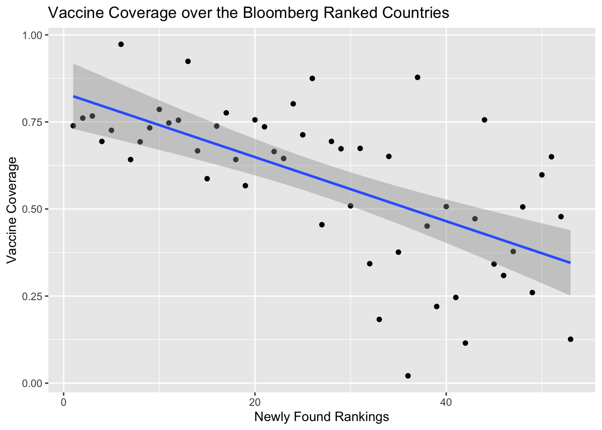
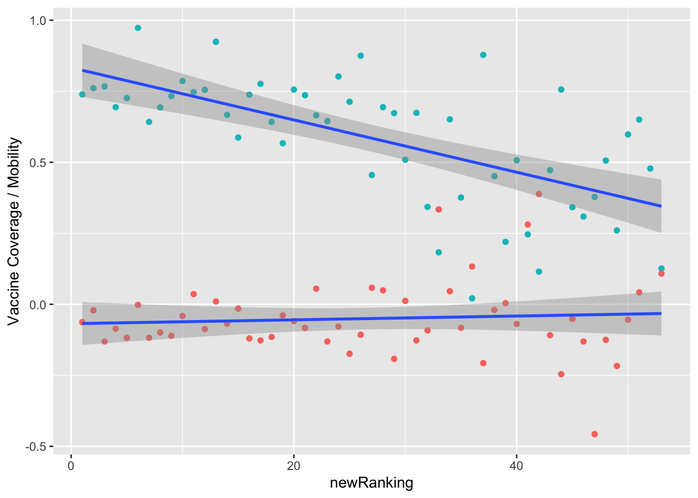
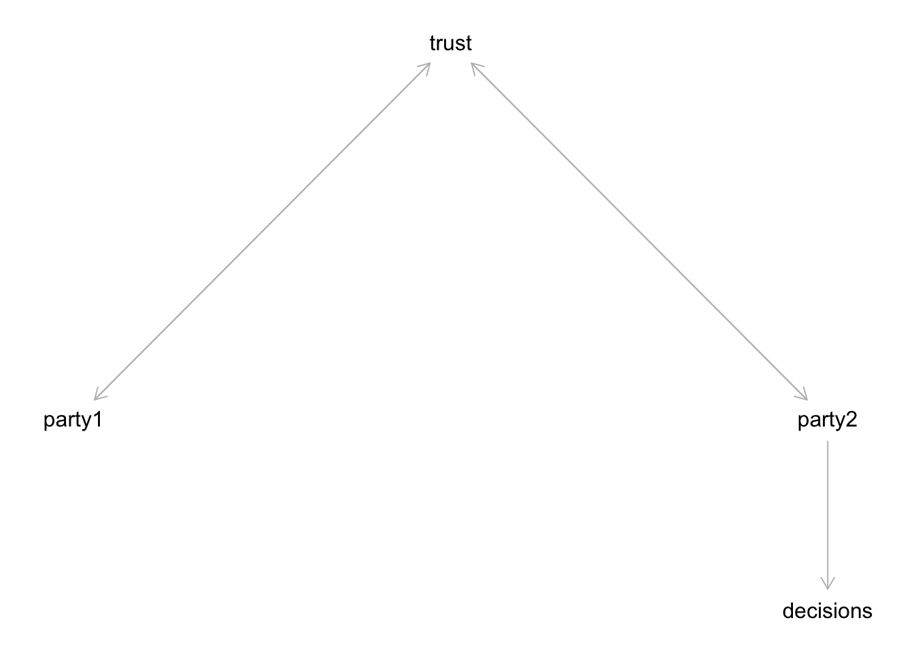

Abstract
A database is introduced, where a case study is finally proposed. Moving foward creates a necessity to verify, modify, then propose a final solution.
Omicron is here - how should insurance companies respond?
Our client, a supply chain company, is worried about the new variant
Objective: Offer a recommendation on an acceptance threshold based on a COVID resiliency Ranking given by Bloomberg
Organization of the report: Manhattan College
My name is Alex, and I am acting as a junior consultant for XYZ Insurance Consulting.
The company operates internationally in several countries.Recent news about the Omicron Covid variant is giving my client worries about claims management regarding covering Covid Hospitalizations (workers Compensation overall). Bloomberg recently made a list, ranking countries in resiliency against Covid-19. If this ranking was statistically reinforced by our data guys, we could make a recommendation to our client that any operation existing in any country under a certain ranking threshold should highly consider moving to a different country. To do this, our firm would have to:
Take a deeper dive into the methodology of the rankings
Understand which variables go into producing said rankings
Make any modifications that we may deem necessary
Either accept or reject the current rankings
Finally, we would create a threshold for the rankings, then give this to our client.
The following paper had some initial quirks that, once wrestles with, gave us the means to produce viable results. In the latter part of the paper exists an appendix, please visit that to learn more about how I got to the final model used.
As well, I must say that, due to the nature of the topic, I will be discussing fatalities of Covid 19. When combined with topics of Insurance, some may feel a sense of morbidity or apathy. I want to stress that, above all, the true horror of the pandemic are the brothers and sisters we’ve lost to the virus. Every life is sacred, but when discussing insurance, there needs to be a line.
For the sense of analysis, I will be brief when discussing topics such as fatalities, but in the Appendix I may go into further detail.
In this section, we will go over the following points:
First, we will call the case study variables, such as countries, data sets, etc.
We will then re-create the bloomberg Resiliency scores
We will then quickly analyze the currents weights, then re-adjust those weights using applicable logic
We will re-calculate the index, taking a moment to analyze the new results
Finally, we will create a threshhold and make a client recommendation
clientCountries<- data.frame("Countries" = c("U.S.", "Mainland China","Japan", "Malaysia", "Vietnam", "Germany","Ireland" ))df<- read_excel("Data/Bloomberg Covid Resilience Ranking.xlsx")
(head(df))## # A tibble: 6 × 16
## RANK CHANGE ECONOMY `BLOOMBERG RESILIEN… `PEOPLE COVERED BY… `LOCKDOWN SEVER…
## <dbl> <dbl> <chr> <dbl> <dbl> <dbl>
## 1 1 0 Ireland 75.1 0.738 42
## 2 2 0 Spain 74.6 0.767 41
## 3 3 3 U.A.E. 74.6 0.973 39
## 4 4 1 Denmark 74.3 0.761 24
## 5 5 1 Finland 74.2 0.726 24
## 6 6 4 Norway 73.1 0.739 20
## # … with 10 more variables: FLIGHT CAPACITY <dbl>,
## # VACCINATED TRAVEL ROUTES <dbl>, 1-MONTH CASES PER 100,000 <dbl>,
## # 3-MONTH CASE FATALITY RATE <dbl>, TOTAL DEATHS PER 1 MILLION <dbl>,
## # POSITIVE TEST RATE <dbl>, COMMUNITY MOBILITY <dbl>,
## # 2021 GDP GROWTH FORECAST <dbl>, UNIVERSAL HEALTHCARE COVERAGE <dbl>,
## # HUMAN DEVELOPMENT INDEX <dbl>For analysis purposes, we will change the column names using Dplyr:
bloombergData = rename(df,
rank = RANK,
change = CHANGE,
economy = ECONOMY,
resilience = 'BLOOMBERG RESILIENCE SCORE',
vaccine.Coverage = 'PEOPLE COVERED BY VACCINES',
lockdown.Severity = 'LOCKDOWN SEVERITY',
flight.Cap = 'FLIGHT CAPACITY',
routes = 'VACCINATED TRAVEL ROUTES',
one.Month.Cases = '1-MONTH CASES PER 100,000',
three.Month.Fatalities = '3-MONTH CASE FATALITY RATE',
deaths = 'TOTAL DEATHS PER 1 MILLION',
test.Rate = 'POSITIVE TEST RATE',
mobility = 'COMMUNITY MOBILITY',
gdp = '2021 GDP GROWTH FORECAST',
healthcare = 'UNIVERSAL HEALTHCARE COVERAGE',
dev.Index = 'HUMAN DEVELOPMENT INDEX'
)
(head(bloombergData))## # A tibble: 6 × 16
## rank change economy resilience vaccine.Coverage lockdown.Severity flight.Cap
## <dbl> <dbl> <chr> <dbl> <dbl> <dbl> <dbl>
## 1 1 0 Ireland 75.1 0.738 42 -0.442
## 2 2 0 Spain 74.6 0.767 41 -0.244
## 3 3 3 U.A.E. 74.6 0.973 39 -0.396
## 4 4 1 Denmark 74.3 0.761 24 -0.376
## 5 5 1 Finland 74.2 0.726 24 -0.593
## 6 6 4 Norway 73.1 0.739 20 -0.272
## # … with 9 more variables: routes <dbl>, one.Month.Cases <dbl>,
## # three.Month.Fatalities <dbl>, deaths <dbl>, test.Rate <dbl>,
## # mobility <dbl>, gdp <dbl>, healthcare <dbl>, dev.Index <dbl>Brian Lee Yung Rowe made a skeptical analysis that was done on the bloomberg rankings. I must say that his article came out before the methodology (Rachel Tang (2021)) article was recently edited. Judging by the tone of Rowe’s article, it sems that the piece was written before the methodology was released.
That being said, Rowe was great at assuming firsthand that there may be weights attached to a model used if there was a linear regression, so we begin with that.
This code chunk is also mostly taken from Rowe’s article. (Rowe (2021))
model<- lm(resilience ~ vaccine.Coverage + lockdown.Severity + flight.Cap + routes + one.Month.Cases + three.Month.Fatalities + deaths + test.Rate + mobility + gdp + healthcare + dev.Index, bloombergData)
summary(model)##
## Call:
## lm(formula = resilience ~ vaccine.Coverage + lockdown.Severity +
## flight.Cap + routes + one.Month.Cases + three.Month.Fatalities +
## deaths + test.Rate + mobility + gdp + healthcare + dev.Index,
## data = bloombergData)
##
## Residuals:
## Min 1Q Median 3Q Max
## -0.13868 -0.04285 0.00145 0.04420 0.19973
##
## Coefficients:
## Estimate Std. Error t value Pr(>|t|)
## (Intercept) 3.484e+01 1.813e-01 192.16 <2e-16 ***
## vaccine.Coverage 8.792e+00 1.085e-01 81.07 <2e-16 ***
## lockdown.Severity -1.328e-01 9.219e-04 -144.04 <2e-16 ***
## flight.Cap 8.837e+00 6.353e-02 139.10 <2e-16 ***
## routes 3.201e-02 1.465e-04 218.46 <2e-16 ***
## one.Month.Cases -4.240e-03 3.864e-05 -109.72 <2e-16 ***
## three.Month.Fatalities -1.083e+02 1.067e+00 -101.44 <2e-16 ***
## deaths -1.362e-03 1.416e-05 -96.18 <2e-16 ***
## test.Rate -3.704e+01 2.956e-01 -125.29 <2e-16 ***
## mobility 9.985e+00 1.210e-01 82.55 <2e-16 ***
## gdp 5.916e+01 6.188e-01 95.60 <2e-16 ***
## healthcare 1.453e-01 2.191e-03 66.32 <2e-16 ***
## dev.Index 1.966e+01 3.512e-01 55.99 <2e-16 ***
## ---
## Signif. codes: 0 '***' 0.001 '**' 0.01 '*' 0.05 '.' 0.1 ' ' 1
##
## Residual standard error: 0.08432 on 36 degrees of freedom
## (4 observations deleted due to missingness)
## Multiple R-squared: 0.9999, Adjusted R-squared: 0.9999
## F-statistic: 4.181e+04 on 12 and 36 DF, p-value: < 2.2e-16max(model$coefficients)## [1] 59.1566min(model$coefficients)## [1] -108.2805When we take a look at the results, doing a multi-linear regression gets us quite close to the real deal. That’s a good start, at least.
That being said, certain variance in weights is vast. The maximum coeficient was forecasted GDP at a weight of 59.1566, and the min was three month fatality with a weight of -108.25. This works when rating countries based on economic factors (especially considering that the rankings came from Bloomberg), but when we consider factors like insurance claims, something like the amount of vaccinated plane routes is more important than a country’s GDP.
As well, there is a distinct difference between a factor that would be more impactful for busienss decisions vs. insurance risk.
For more info on consideration on importance of certain factors over others in the insurance world, please reference the appendix.
If we adjust the rankings, we may see differences in the rankings themselves, which would lead us to either accept or reject the current rankings.
To do this, conceptualize the weights:
modelWeights = model$coefficientsHere are the factors in descending order of weight:
Three Month Fatality
Forecasted GDP
Positive Test Rate
Development Index
Community Mobility
Flight Capacity
Vaccine Coverage
Universal Healthcare
Lockdown Severity
Routes
One Month Cases
Deaths
I agree that three month fatality is a good factor, but forecasted GDP is not, in this case. For that reason, I’m moving the weight of that factor to 1.
As well, current news about the Omicron Variant means that any in-person activity equals more opportunities for new cases. that being said, we are still very reliant on people working in-person for our shipping channels, so community mobility will be changed from a 9.9 to 6.6.
Flight capacity is a measure of available seats on a plane, essentially (Rachel Tang (2021)). While important, I think it’s current weight is fine.
Since vaccines are the current only form of medicine that one can take to prevent / reduce adverse effects of Covid, this factor is extremely important. Therefore, its weight is going from 8.79 to 50.
As stated earlier, available routes is important to our supply-chain client. Having lots of flight routes open means that there is a higher chance that those shipping lines can come back to life. For that reason, the indicator weight is being changed from 0.032 to 2.3.
While one month cases may initially be significant, we must remember the scope of the project. Since we may be suggesting our client to move operations, we should not make a decision based on a factor that changes so often. For this reason, I will not be touching the weight for one month cases.
That would change our weights to:
modelWeights['gdp'] = 1
modelWeights['mobility'] = 6.6
modelWeights['vaccine.Coverage'] = 50
modelWeights['routes'] = 2.3#I write the following expression so I can predict the models based off the linear regression model.
#Line 223 could not have existed if not for a page I found online, which I will note after this chunk so I can add parentheticals.
funt<- resilience ~ offset(6.25*vaccine.Coverage) + lockdown.Severity + flight.Cap + offset(0.0139*routes) + one.Month.Cases + three.Month.Fatalities + deaths + test.Rate + offset(0.661*mobility) + offset(0.016904*gdp) + healthcare + dev.Index
newModel = lm(funt, bloombergData, na.action = 'na.exclude')
#I save the predictions to a new variable, I aded the na.action as to exclude the NA's as a result of the different data holes in Brazil, Iran, and Egypt.
newScores<- predict.lm(
lm(funt, bloombergData, na.action = 'na.exclude')
)
predictionData<- bloombergData %>%
mutate( scoreV2 = newScores) %>%
relocate(scoreV2, .after = resilience) %>%
arrange(desc(scoreV2)) %>%
mutate(
newRanking = 1:53,
newChange = rank - newRanking
) %>%
relocate(newRanking, .after = rank) %>%
relocate(newChange, .after = change)
rename(predictionData, bloombergChange = change)## # A tibble: 53 × 19
## rank newRanking bloombergChange newChange economy resilience scoreV2
## <dbl> <int> <dbl> <dbl> <chr> <dbl> <dbl>
## 1 6 1 4 5 Norway 73.1 75.8
## 2 4 2 1 2 Denmark 74.3 74.7
## 3 2 3 0 -1 Spain 74.6 74.2
## 4 12 4 6 8 Sweden 70 72.8
## 5 5 5 1 0 Finland 74.2 72.6
## 6 3 6 3 -3 U.A.E. 74.6 72.3
## 7 9 7 -1 2 Switzerland 71.3 71.1
## 8 10 8 -7 2 Netherlands 71.3 70.6
## 9 16 9 13 7 Japan 68.4 70.5
## 10 18 10 7 8 Portugal 67.6 70.4
## # … with 43 more rows, and 12 more variables: vaccine.Coverage <dbl>,
## # lockdown.Severity <dbl>, flight.Cap <dbl>, routes <dbl>,
## # one.Month.Cases <dbl>, three.Month.Fatalities <dbl>, deaths <dbl>,
## # test.Rate <dbl>, mobility <dbl>, gdp <dbl>, healthcare <dbl>,
## # dev.Index <dbl>predictionData %>%
select(newRanking, economy, resilience, scoreV2)## # A tibble: 53 × 4
## newRanking economy resilience scoreV2
## <int> <chr> <dbl> <dbl>
## 1 1 Norway 73.1 75.8
## 2 2 Denmark 74.3 74.7
## 3 3 Spain 74.6 74.2
## 4 4 Sweden 70 72.8
## 5 5 Finland 74.2 72.6
## 6 6 U.A.E. 74.6 72.3
## 7 7 Switzerland 71.3 71.1
## 8 8 Netherlands 71.3 70.6
## 9 9 Japan 68.4 70.5
## 10 10 Portugal 67.6 70.4
## # … with 43 more rowsOn the variable “funt,” I was having extreme difficulty in finding out how to properly manually set coefficients to make predictions on the linear model. This was the best way I could find that does virtually the same thing. The website can be found in the references: BenBarnes (2012)
We have a shift in the results! It seems that the top 5 are as follows:
Norway
Denmark
Spain
Sweden
Finland
Is there much surprise? Something that can be said in this case is that some of the more Nordic countries have a society that pushed for a more strict Covid response, and said response was generally more accepted than countries like the USA, which is now in 26th place.
To start, I wonder: how many of our countries ranked have a vaccine coverage over 50%? Here’s the code for that:
ggplot(
data = predictionData, aes(x = newRanking, y = vaccine.Coverage)) +
geom_point() +
geom_smooth(method = "lm") +
labs( title = "Vaccine Coverage over the Bloomberg Ranked Countries",
x = "Newly Found Rankings",
y = "Vaccine Coverage"
) As we can see, vaccine coverage at 50% seems to land around the top 35 countries, which seems pretty reasonable.
What happens if we were to plot 3-month Fatalities alongside that? Would we feel the same way?
ggplot(
data = predictionData, aes(x = newRanking)) +
geom_point(aes(y = vaccine.Coverage, color = 'red'), show.legend = FALSE) +
geom_point(aes(y = mobility, color = 'green'), show.legend = FALSE) +
geom_smooth(aes(y=vaccine.Coverage), method = "lm") +
geom_smooth(aes(y= mobility), method = "lm") +
scale_y_continuous(
name = 'Vaccine Coverage / Mobility'
)
Reds are Mobility, Greens are vaccine coverage.
Mobility doesn’t seem to have nearly as much of an impact as I thought - it seems that there is a bit more variance as you get to the latter ranks, but that’s not of much concern.
Overall, I think that, after looking at the spread of vaccine coverage, the acceptance threshold should be drawn at ranking # 35. So where does that leave us?
acceptedCountries<- predictionData %>%
filter(newRanking < 36)
rejectedCountries<- predictionData %>%
filter(newRanking >= 36)
clientRejections<- rejectedCountries %>%
filter(economy %in% clientCountries$Countries)
clientRejections## # A tibble: 2 × 19
## rank newRanking change newChange economy resilience scoreV2 vaccine.Coverage
## <dbl> <int> <dbl> <dbl> <chr> <dbl> <dbl> <dbl>
## 1 50 44 1 6 Malaysia 48.9 51.6 0.756
## 2 52 47 0 5 Vietnam 44 48.6 0.378
## # … with 11 more variables: lockdown.Severity <dbl>, flight.Cap <dbl>,
## # routes <dbl>, one.Month.Cases <dbl>, three.Month.Fatalities <dbl>,
## # deaths <dbl>, test.Rate <dbl>, mobility <dbl>, gdp <dbl>, healthcare <dbl>,
## # dev.Index <dbl>Based on the table above, I would recommend to my client that two of their operations, Malaysia and Vietnam, are at an insurance risk that is I would not advise to proceed with.
The reasons for Malaysia are as follows:
While the vaccination rate in Malaysia is high, the 3-Month Fatality rate in Malaysia as of now is 0.014, which is 10x higher than the first place spot, which is at 0.001%.
As well, their mobility is at a -0.246, while the #1 spot is at a 0.063.
As for Vietnam, their covid resilience was never too strong. Here are some of the toughest marks for them:
Their vaccination rates are only at 37.8%. That alone poses a much larger risk.
This would probably balance out if their fatality rate was equally low, but their actual fatality rate is at 0.023%.
Once again, these factors are not the end-all, be-all solution to understanding insurance financial risk, but these may be a key way to quickly get an understanding of how Covid resiliency could help highlihgt attached risk.
As well, I will end this secion with the list of “Accepted Countries” for the client. With a quick glance, you will be able to see recommended countries and their following data points. I would personally recommend countries with a high vaccination rate, low 3-month fatality rate, and possibly a higher to mid mobility. If possible, having a country with lax lockdowns would help with economic movements, but obviously comes with risks.
I hope these recommendations have been helpful, please reach out with any questions.
acceptedCountries## # A tibble: 35 × 19
## rank newRanking change newChange economy resilience scoreV2 vaccine.Coverage
## <dbl> <int> <dbl> <dbl> <chr> <dbl> <dbl> <dbl>
## 1 6 1 4 5 Norway 73.1 75.8 0.739
## 2 4 2 1 2 Denmark 74.3 74.7 0.761
## 3 2 3 0 -1 Spain 74.6 74.2 0.767
## 4 12 4 6 8 Sweden 70 72.8 0.694
## 5 5 5 1 0 Finland 74.2 72.6 0.726
## 6 3 6 3 -3 U.A.E. 74.6 72.3 0.973
## 7 9 7 -1 2 Switze… 71.3 71.1 0.642
## 8 10 8 -7 2 Nether… 71.3 70.6 0.693
## 9 16 9 13 7 Japan 68.4 70.5 0.733
## 10 18 10 7 8 Portug… 67.6 70.4 0.786
## # … with 25 more rows, and 11 more variables: lockdown.Severity <dbl>,
## # flight.Cap <dbl>, routes <dbl>, one.Month.Cases <dbl>,
## # three.Month.Fatalities <dbl>, deaths <dbl>, test.Rate <dbl>,
## # mobility <dbl>, gdp <dbl>, healthcare <dbl>, dev.Index <dbl>In this section, we will go over various topics that, while are not necessarily useful for the paper itself, offer useful information for further context.
They helps us answer questions like:
Why did you not use a different model?
Where did the data come from?
How did you aggregate the data?
(as a note, some of the above questions came from the Bloomberg article) Rachel Tang (2021)
The initial thought objective of this paper was to re-create the Bloomberg Covid Resiliency Index that was given in the Dataset. After visiting their methodology page (Rachel Tang (2021)), I found some issues.
On pagerduty, data aggregation is defined as:
“data aggregation is the process of compiling typically [large] amounts of information from a given database and organizing it into a more consumable and comprehensive medium” (“What Is Data Aggregation?” (2021)).
Bloomberg says that they aggregate their data using the “Max-Min” method (Rachel Tang (2021)) in order to normalize each of the factors.
This isn’t such a problem, up until we try to perform this action. Let’s see what happens
“The basic formula for converting an indicator value (V) into an index score (I) is:
\[ I = 100 * \frac{V-minValue}{maxValue - minValue} \] (this information was found at the UN (2021) source)
That sounds great, so let’s try and apply this to our data set. We will do the following:
For each column, mutate it using Dplyr to apply the above equation
delete the old column. Out with the old, in the with the New
create a new column which is the average of the row
In theory, this should give us the covid Resiliency score, right?
scoreDF <- bloombergData %>%
select(resilience, vaccine.Coverage, lockdown.Severity, flight.Cap, routes, one.Month.Cases, three.Month.Fatalities, deaths, test.Rate, mobility, gdp, healthcare, dev.Index) %>%
mutate(
vaccineCoverageScore = 100 * ( (vaccine.Coverage - min(vaccine.Coverage)) / ( max(vaccine.Coverage) - min(vaccine.Coverage))),
lockdownSeverityScore = 100 * ( (lockdown.Severity - min(lockdown.Severity)) / ( max(lockdown.Severity) - min(lockdown.Severity))),
flightCapScore = 100 * ( (flight.Cap - min(flight.Cap)) / ( max(flight.Cap) - min(flight.Cap))),
routeScore = 100 * ( (routes - min(routes)) / ( max(routes) - min(routes))),
oneMonthScore = 100 * ( (one.Month.Cases - min(one.Month.Cases)) / ( max(one.Month.Cases) - min(one.Month.Cases))),
threeMonthScore = 100 * ( (three.Month.Fatalities - min(three.Month.Fatalities)) / ( max(three.Month.Fatalities) - min(three.Month.Fatalities))),
deathScore = 100 * ( (deaths - min(deaths)) / ( max(deaths) - min(deaths))),
testRateScore = 100 * ( (test.Rate - min(test.Rate, na.rm = TRUE)) / ( max(test.Rate, na.rm = TRUE) - min(test.Rate, na.rm = TRUE))),
mobilityScore = 100 * ( (mobility - min(mobility, na.rm = TRUE)) / ( max(mobility, na.rm = TRUE) - min(mobility, na.rm = TRUE))),
gdpScore = 100 * ( (gdp - min(gdp)) / ( max(gdp) - min(gdp))),
healthcareScore = 100 * ( (healthcare - min(healthcare, na.rm = TRUE)) / ( max(healthcare, na.rm = TRUE) - min(healthcare, na.rm = TRUE))),
devIndexScore = 100 * ( (dev.Index - min(dev.Index)) / ( max(dev.Index) - min(dev.Index))),
.keep = 'none'
)
scoreDF$newScores<- rowMeans(scoreDF)
scoreDF <- scoreDF %>%
relocate(newScores, .before = vaccineCoverageScore)
(review <- data.frame(bloombergData$resilience, scoreDF$newScores))## bloombergData.resilience scoreDF.newScores
## 1 75.1 57.56012
## 2 74.6 48.48324
## 3 74.6 39.92292
## 4 74.3 39.92298
## 5 74.2 41.27186
## 6 73.1 38.75924
## 7 71.5 51.57188
## 8 71.4 49.42164
## 9 71.3 48.13190
## 10 71.3 49.69946
## 11 70.6 50.36157
## 12 70.0 37.09316
## 13 69.1 47.71770
## 14 68.6 37.54273
## 15 68.5 42.30919
## 16 68.4 36.21398
## 17 67.8 48.14120
## 18 67.6 41.54972
## 19 67.5 53.90250
## 20 66.9 44.05337
## 21 66.6 NA
## 22 66.6 50.82570
## 23 66.3 50.53220
## 24 65.8 46.45344
## 25 65.6 54.08489
## 26 65.3 54.41945
## 27 65.3 49.72655
## 28 65.2 38.89459
## 29 62.4 40.58478
## 30 62.2 33.56727
## 31 61.9 NA
## 32 61.5 37.08592
## 33 61.1 39.77720
## 34 59.5 NA
## 35 59.4 31.55016
## 36 58.7 25.12770
## 37 57.6 NA
## 38 57.6 36.73483
## 39 57.5 44.88017
## 40 57.5 37.56746
## 41 57.5 52.21465
## 42 57.3 41.63979
## 43 56.9 58.03754
## 44 56.2 29.54218
## 45 55.7 27.32326
## 46 54.8 43.53998
## 47 53.7 36.90324
## 48 50.5 32.22230
## 49 49.5 61.34365
## 50 48.9 33.80326
## 51 46.8 38.16021
## 52 44.0 24.88274
## 53 40.5 28.86580So, if we look at the resilience Score we came up with, they are not consistent with Bloomberg’s resilience score at all.
The first natural question is: “Maybe there’s a weight attached to each of the indicators?” That would be a good idea, until you read this section in the paragraph in question:
“The final Bloomberg Resilience Score is the average of a place’s performance across the 12 indicators, equally weighted.”
It is possible that they did a form of scaling outside just this formula, but they did not specify.
This miscalculation leaves us with a halt in modeling capabilities. If we cannot replicate the current resilience score, then we cannot effectively weigh our variables again, which will make our final recommendation not only skewed, but flat-out statistically incorrect.
This is why I looked to a new dataset, especially the one from Rowe (2021)
There were a few options, but for this one I liked it’s initial simplicity in regards to business decisions. Something that has fascinated me is how many wildly expensive business decisions that have been made on the back of a small bar napkin and over a quick handshake. Millions of dollars have been passed back and forth based on minimal detail from highly trustworthy sources. For instance, the insurance industry. There have been multi-million dollar deals for insurance packages that have been completed over two people having a small conversation. Why is that?
That is because of trust.
Trust is something that is changing very quickly - I would say that it is the main driver behind the creation of Web3. For so long, trust has worked like this:
library(dagitty)
dag_trust <- dagitty("dag{
party1 <- trust -> party2
party1 -> trust <- party2
decisions <- party2
}"
)
coordinates(dag_trust) <- list(
x=c(party1=0,party2=2,trust=1,decisions=2),
y=c(party1=1,party2=1,trust=0,decisions=1.5)
)
plot(dag_trust)
The point of this diagram is to say that, for party 1 to communicate with a party 2 that makes business decision, there must be trust. Trust is built from the following aspects:
Previous relationship
Brand Recognition
Word of Mouth
For many as of now, we trust certain brands with our money - we buy a pair of shoes from Nike over Clarks because Nike has an established brand that we trust due to it’s extensive word of mouth and recognition.
If we look at Bloomberg, we trust what they put out in terms of news, data, etc., is trusted because of the same reasons above. So when someone is asked at a company:
which of our factories are at a high risk of workers comp due to Covid?
I imagine that the employee may look to the internet for answers. This resiliency score, if verified, would be a great way to give an answer to your boss.
The short version is: it anything that could create a claim.
Something that makes global claims management so tricky is that, for the most part, insurance packages are done in accordance to country laws, which vary greatly in certain areas, such as workers compensation.
For those who are unfamiliar, you usually are elligible for workers compensation if you get injured on the job due to something out of yoru control. So, if you purposefully drive the forklift into the shelf, you cannot claim workers comp. But if your company did not maintain the forklift and a sticky accelerator caused the accident, then you would get workers comp.
The tricky part comes in when we discuss workers comp in reletation to sicknesses. On the National Conference of State Legislatures, they had this to say about illnesses and workers compensation:
“Generally, workers’ compensation does not cover routine community-spread illnesses like a cold or the flu because they usually cannot be directly tied to the workplace. Some states have made exceptions for certain workers who develop chronic illnesses, like cancer, resulting from repeated exposure to harmful materials and environments.”
The natural response to this is that people can get Covid as a response from exposure to the virus at their job, similarly to someone becoming ill from “exposure to harmful materials” Cunningham (2020). That being said, I think the distinction between Covid-19 and other viruses, like the Flu, is that there are common medicines that make recovery easy, while there are no current medicines other than the vaccine to protect against Covid.
That being said, this is not to say that workers comp covers everything regarding Covid. Workers compensation usually comes in the form of:
The cost of Hospitalization
The cost of Death insurance
That being said, in the United States alone, the only two states that require death benefits from Covid are New York and California (Cunningham (2020)). That being said, COVID deaths are still a good measurement of risk for insurance assessment. If someone were to die from Covid, this means that they were likely in a hospital beforehand, which raises the chance that there will need to be a claim. With that knowledge, we can say that, with a higher fatality rate, there is a higher risk of claims.
In this paper, hospitalization data would be wonderful, but finding hospitalization rates that fit with the data for the same countries as is on this ranking list is difficult. For that reason, I will apply a greater weight on fatalities.
In this paper, the insurance element can always be expanded upon. Due to personal time restraints, we were unable to gather new datapoints that would help add onto our own Covid Resiliency Rankings.
One of the key difficult points to this is the interactions between global claims packages and different foreign rules and regulations.
Another is how one would calculate average claims dollars spent per country.
An initial thought would be to do it by company in these countries Ltd. (June)
By seeing general claims from companies, one could get a sense of monies lost per company, then attribute those losses to the company’s headquartered country.
Afterwards you would then ad this as a new variable for each of the 52 countries, which makes it easy to add the variable into the regression.
This factor would carry a large weight since Insurance companies rely heavily on historical data to make future predictions on Insurance Risk Management.